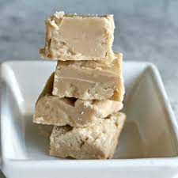

Penuche

Description
Penuche is a fudge-like candy made from brown sugar, butter, and milk, using no
flavorings except for vanilla. Penuche often has a tannish color, and is lighter
than regular fudge. It is formed by the caramelization of brown sugar; thus, its
flavor is said to be reminiscent of caramel.
Ingredients
- 1 cup light brown sugar
- 2 cups granulated white sugar
- 1 cup whole milk
- 3 tablespoons unsalted butter
- 1 ½ teaspoons pure vanilla extract
Steps
- Combine sugar and milk in saucepan and bring to boil over medium-high heat,
stirring constantly
- Reduce heat to medium and continue cooking without stirring
- Once mixture reaches soft ball stage, remove from heat
- Pour into greased baking dish and let cool
- Slice and enjoy!